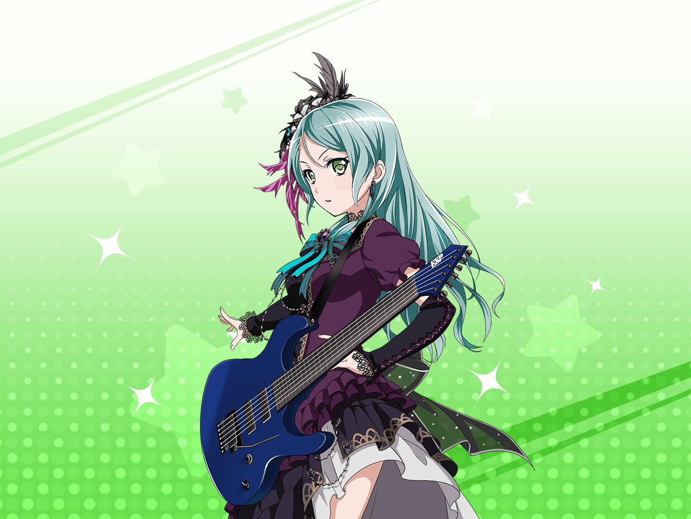

紗夜
……よし
紗夜
練習通りに、一応できたわね
紗夜
でも、練習通りではダメ……
練習以上のものを本番では出さないと
紗夜
……足音？
紗夜
あら？ {{userName}}さん
紗夜
こんなところで何をしているか、ですか？
ライブ前の最終確認です
紗夜
いえ、邪魔されてはいません。
ちょうど、その確認が終わったところですから
紗夜
……別に緊張はしてませんよ
紗夜
ライブは絶対に成功する……
そう思えるだけの、練習量はこなしてきましたから
紗夜
本番前に緊張するということは、
練習の時に、自分を追い込まなかったということ……
紗夜
そんなこと、私には絶対ありえません
紗夜
……はあ、ありがとうございます
紗夜
{{userName}}さんは変わってますね。
今の私の表情が、
ライブの衣装と合っているなんて……
紗夜
そんなところをほめてきた人、初めてです
紗夜
……あ、もうこんな時間。
そろそろ行かないと
紗夜
不思議ですね。
少ししか話してないと思っていたのに、
こんなに時間が経っていたとは思いませんでした
紗夜
……それじゃあ、私は行きます
紗夜
今日のライブも、完璧に演奏してみせますから
期待していてください